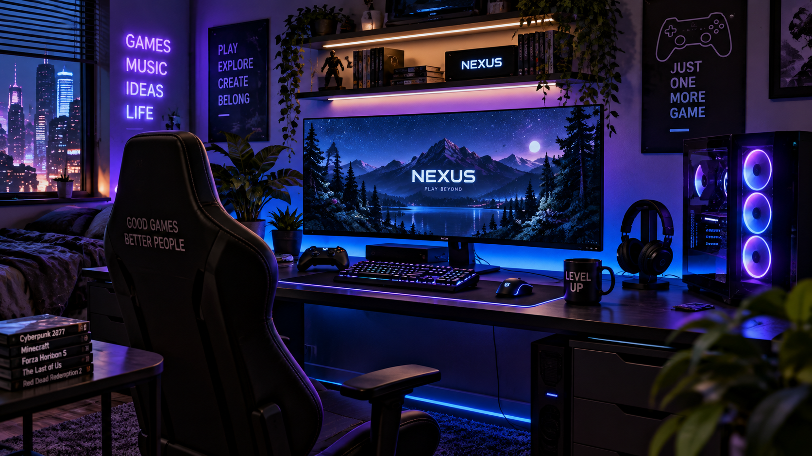

FEATURED
The Future of Gaming
Gaming continues to evolve with better graphics, larger virtual worlds and new ways for players to connect with each other.
Developers continue experimenting with artificial intelligence, virtual reality and cloud technology to create new gaming experiences.